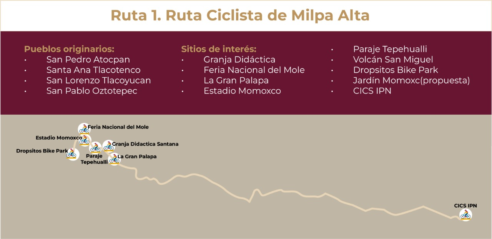
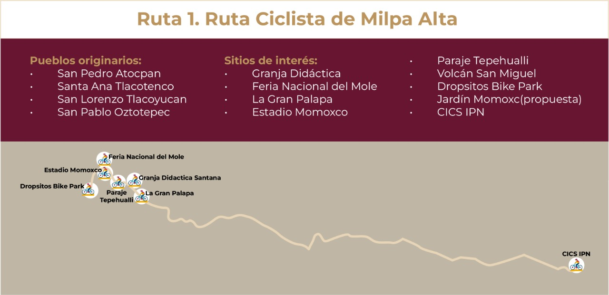
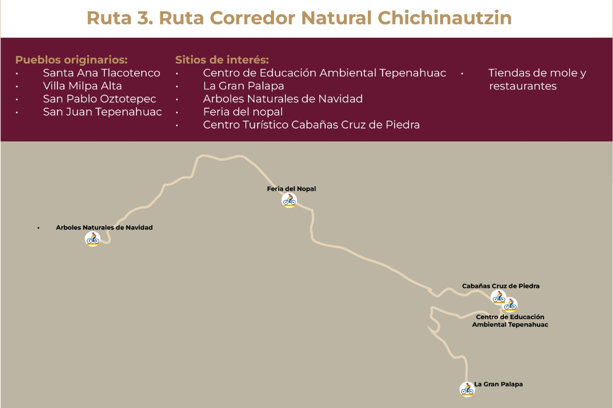
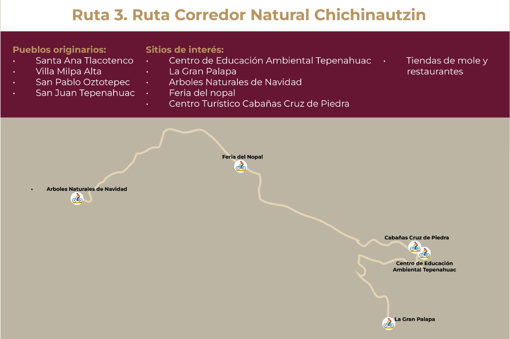

Rutas, corredores y circuitos turísticos
Así mismo, se identificó que Milpa Alta es un destino con vocación y potencial para el turismo rural, gastronómico y deportivo de naturaleza, por lo cual se proponen tres rutas.
Ruta 1
Ruta Ciclista de Milpa Alta
Recorrido de 17 km, a través de sus colinas y miradores, incluye:
● Estaciones de descanso y auxilio
● Zona de alimentos y abastecimiento
● Infraestructura y equipamiento seguros
● Servicios mecánicos y de información
Eventos especiales programados: Ciclotón, competencias deportivas, recorridos guiados.
Servicios relacionados:
Dropsitos Bike Park, Pista de San Salvador Cuauhtenco.
Recorrido aproximado total: 25.7 km
8 ciclo-estaciones
 


Ruta 2
Ruta Ciclista de Milpa Alta
Engloba las experiencias agroturísticas de la Alcaldía, como las que ofrecen :
•Sabor Rural
•Granja Didáctica Santa Inés
•Jardín Alondra
•La Cabaña
•Cabañas Cruz de Piedra
•Nopalli Maguey (entre otros)
•Se creará una identidad e imagen.
•Se enfocará en el turismo rural y agroturismo, que actualmente ya existe de manera aislada.
•Se promoverá a los productores locales de maguey, pulque, nopal, mole, amaranto, hortalizas y flores.
Ruta 3
Ruta Corredor Natural Chichinautzin
Su objetivo es incorporar los atractivos naturales con los centros turísticos que ofrecen experiencias en la naturaleza como son:
•Terapias de bosque
•Senderismo
•Aviturismo
Algunos centros turísticos que pueden ofrecer estos servicios son:
•Centro Turístico Cabañas Cruz de Piedra,
•Centro de Educación Ambiental Tepenahuac
•La Gran Palapa
•Tepeyolotzin
•La Troje (entre otros)
Se establecerán sistemas de control y regulación de la capacidad de carga, además de acciones de mitigación y adaptación ante los efectos del cambio climático.
 
